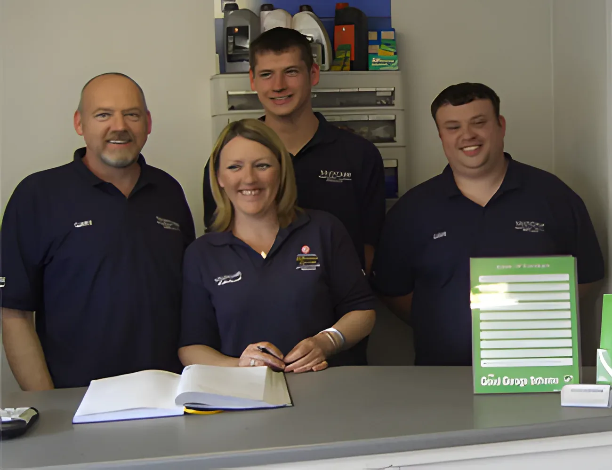
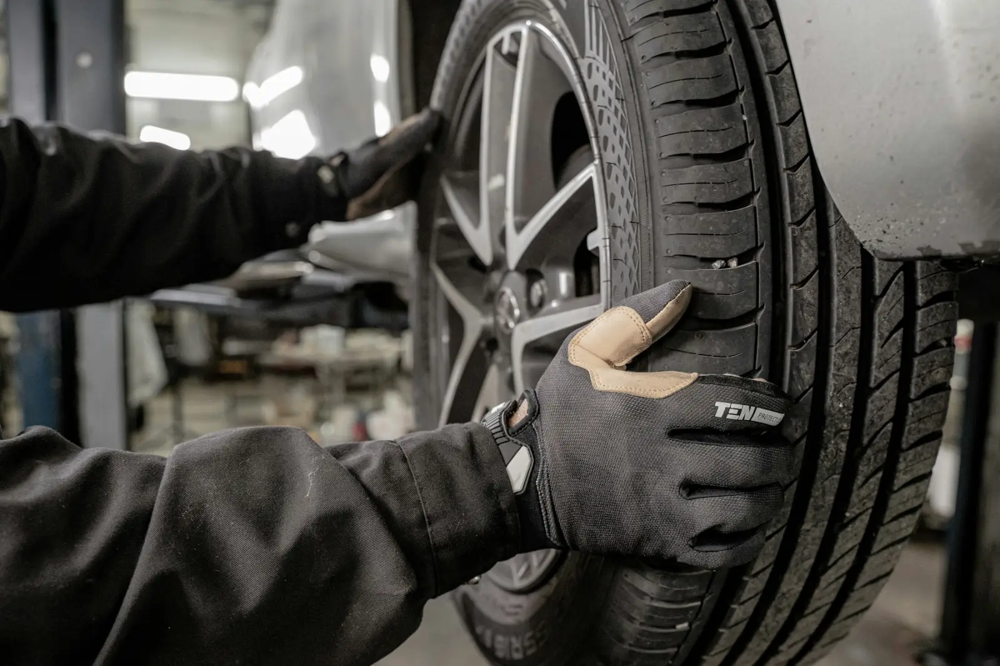

Vauxcare, independent Vauxhall specialists in Lincoln
Independent Vauxhall specialists in Lincoln. Family run since 1994.
Servicing, MOTs, diagnostics, repairs and tyres. Vauxhalls are our speciality, and we look after every other make and model too.

- Workshop
- 4 Wavell Road, Allenby Industrial Estate, off Monks Road, Lincoln LN3 4PB
- Open
- Monday to Friday, 8.30am–5.30pm
Open now - While your car is in
- Courtesy cars, free of charge
- Phone
- 01522 510610
Your Vauxhall warranty stays intact.
So why pay main dealer prices?
A European law known as Block Exemption came into force in 2003. It means an independent garage like ours can service your Vauxhall without touching your manufacturer warranty.
We use genuine and OE (original equipment) quality parts, and your service book is stamped after every Vauxhall service we carry out.
What we do
Vauxhalls first. Every other make and model too, plus MOTs for light commercial vehicles. From a simple bulb change to an engine and gearbox rebuild.
All services in detail01 / 08ServicingFull and interim, the old-school way
- Every 10,000 miles or once a year
- Genuine and OE quality parts
- Service book stamped
- Main dealer warranty stays intact
02 / 08MOTsAll makes, plus light commercial vehicles
- Comprehensive pre-MOT checks
- MOTs arranged for all makes and models
- Light commercial vehicles too
03 / 08DiagnosticsVauxhall Tech 2 and dedicated master technicians
- Fault finding and electrical faults
- ECU and key reprogramming
- Software updates
- Particulate filter cleaning
04 / 08RepairsAny make, any job, with a warranty on our work
- Fully equipped workshop
- Skilled mechanics who advise on what's needed
- Warranties on the jobs we do
- Free courtesy cars
05 / 08Engine & gearboxEngine rebuilds and gearbox repairs
- Engine rebuilds
- Gearbox repairs and rebuilds
- Vauxhall and all other makes
06 / 08Warranty repairsCarried out to a high standard
- Genuine and OE quality parts
- Vauxhall and all other makes
07 / 08TyresPopular brands and sizes in stock
- Other tyres on request, delivered twice a day
- Fitting and wheel balancing
08 / 08PartsGenuine Vauxhall parts at discounted prices
- Parts for all other makes too
- Brakes, batteries, exhausts, filters
- Body panels for all makes
- Sourced from trusted suppliers if not in stock
Small enough to care, large enough to cope.
An alternative to the main dealers, with a fully equipped workshop that can tackle any service or repair. Our story
The year we opened, in a modest workshop in the south of Lincoln. We soon outgrew it and moved north of the city to bigger premises.
of us in the team. Our customer base has grown mainly by word of mouth.
or once a year. Old-school service intervals, the way we've always done it.
Vauxhall Tech 2 diagnostics
Cars now have many computers on board, running not just the engine but the brakes, comfort systems and security. We have the latest Vauxhall diagnostic equipment and master technicians who specialise in vehicle electrics and electronics.
A diagnostic check reads any fault codes stored in your car's systems. We give you a full report, help you decide on the best fix, and quote before any work.
- Fault finding✓
- ECU reprogramming✓
- Key supply and reprogramming✓
- Vehicle software updates✓
- Electrical faults✓
- Particulate filter cleaning✓
Other makes: we have several diagnostic computers, so we can work on all makes and models.

Stock photo (Unsplash), not Vauxcare's workshop.Tyres & parts
We keep the most popular tyre brands and sizes in stock. Other tyres are available on request, with deliveries twice a day. Full fitting and wheel balancing too.
Parts we supply
- Genuine Vauxhall parts
- Brakes
- Batteries
- Exhausts
- Oil filters
- Lubricants
- Wiper blades and arms
- Alternators
- Starter motors
- Ignition parts
- Gaskets
- Forte additives
- Body panels, all makes
Not in stock? We source it from trusted suppliers so you're back on the road with minimal disruption.
Book a service, an MOT or a repair. Ring us, and ask for a free courtesy car while yours is in.
01522 510610Monday to Friday, 8.30am–5.30pm. Or email vauxcare@btconnect.com
Find us
Open now4 Wavell Road, Allenby Industrial Estate, Monks Road, Lincoln LN3 4PB
North of the city, on the Allenby Industrial Estate off Monks Road.
| Monday | 8.30am – 5.30pm |
| Tuesday | 8.30am – 5.30pm |
| Wednesday | 8.30am – 5.30pm |
| Thursday | 8.30am – 5.30pm |
| Friday | 8.30am – 5.30pm |
| Saturday | Closed |
| Sunday | Closed |